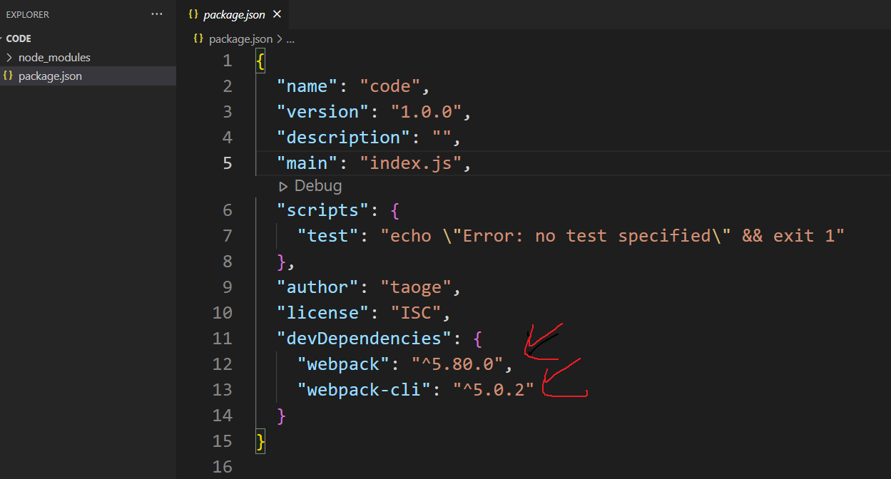
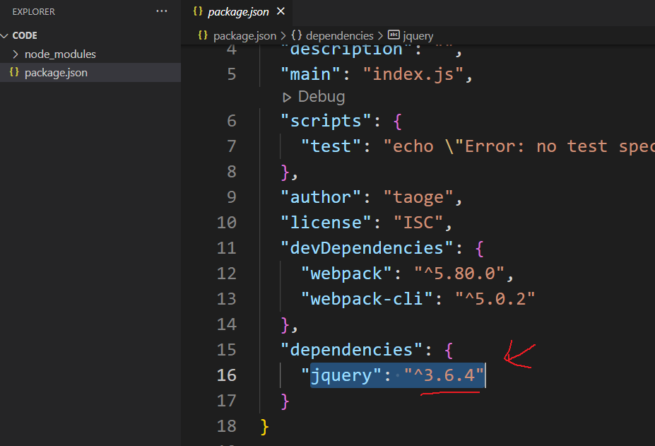
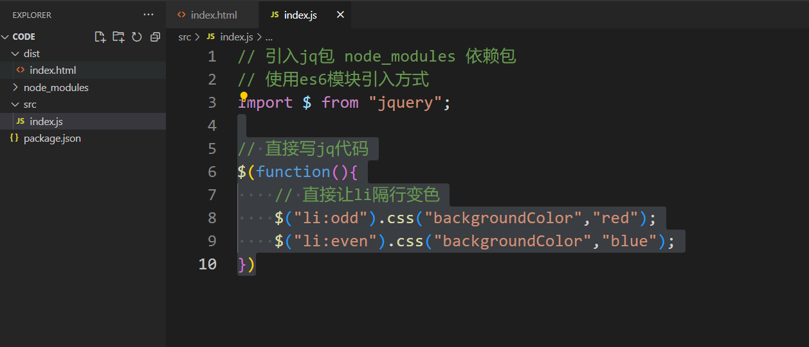
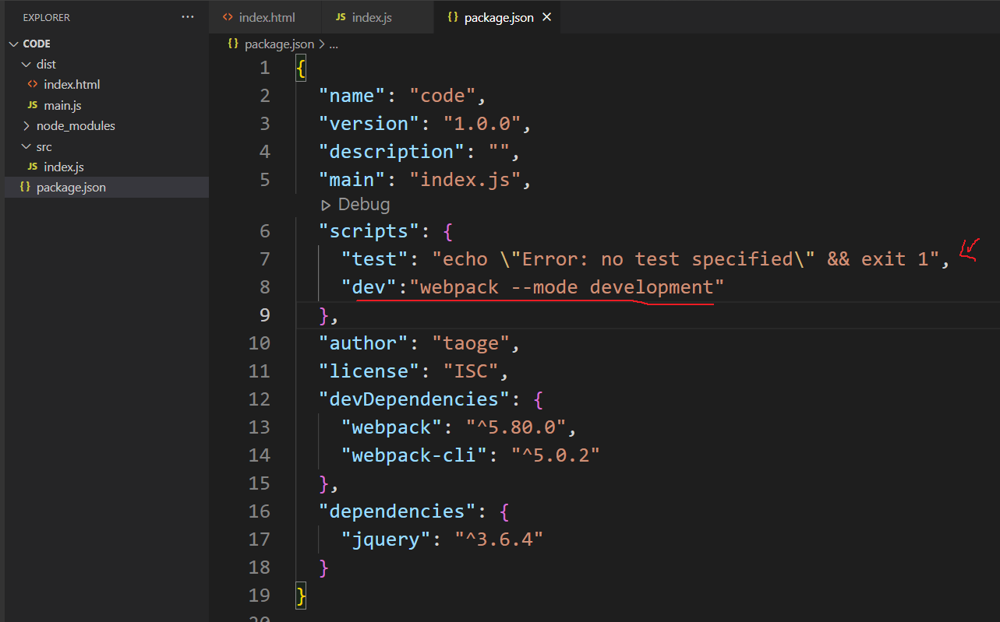
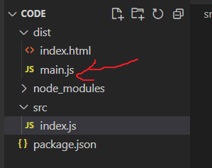
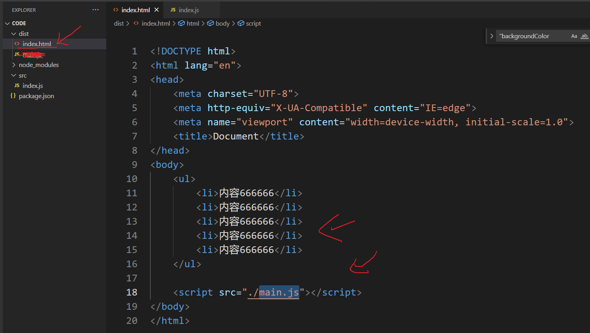
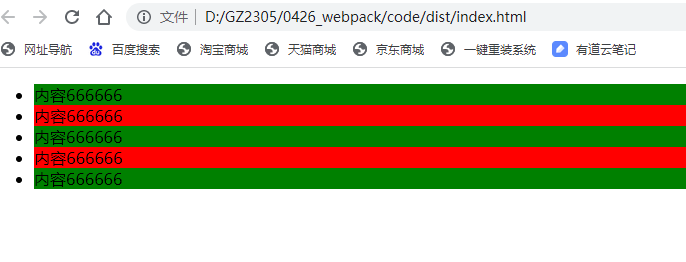
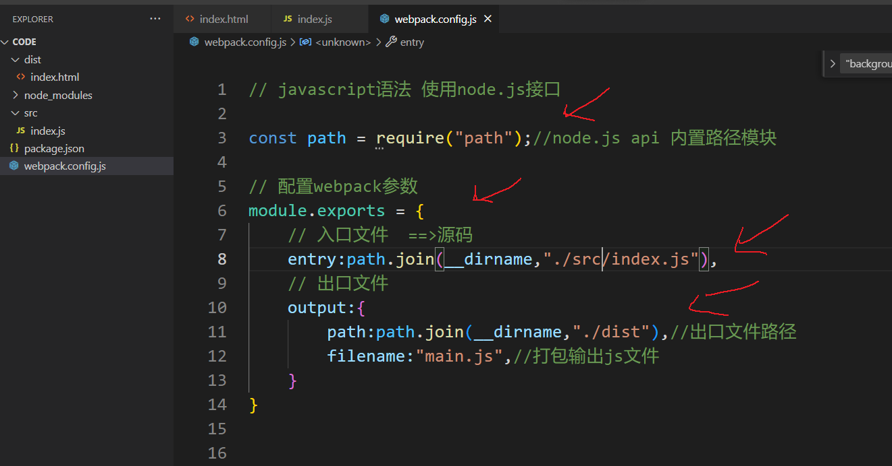
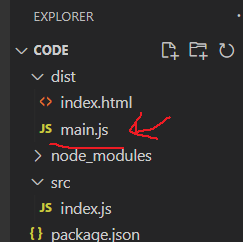

# webpack 安装
安装全局 webpack 配置 (只安装一次)
- $cnpm i webpack -g 缩写
- $cnpm install webpack -g
安装本地 webpack 项目环境 (新项目必须安装)
- $cnpm i webpack webpack-cli -D 缩写
- $cnpm install webpack webpack-cli --save-dev
- --save -S 向生产环境添加依赖包 (项目上线必须存在安装包)
- --save-dev -D 向开发环境添加依赖包 (项目上线后会不需要添加安装包)

# webpack 起步
安装 jquery 包：
$cnpm i jquery -S

创建两个文件夹 dist src 不能改名字
./dist/index.html 创建
./src/index.js 创建

配置 ./package.json 文件

执行命令：
$npm run dev

引入出口文件

结果

# 创建 webpack.config.js 文件
手动创建 webpack.config.js 文件
通过文件配置入口文件与出口文件

$npm run dev
